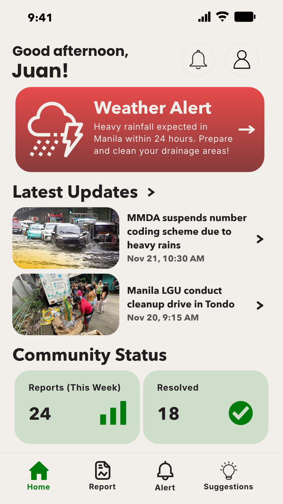
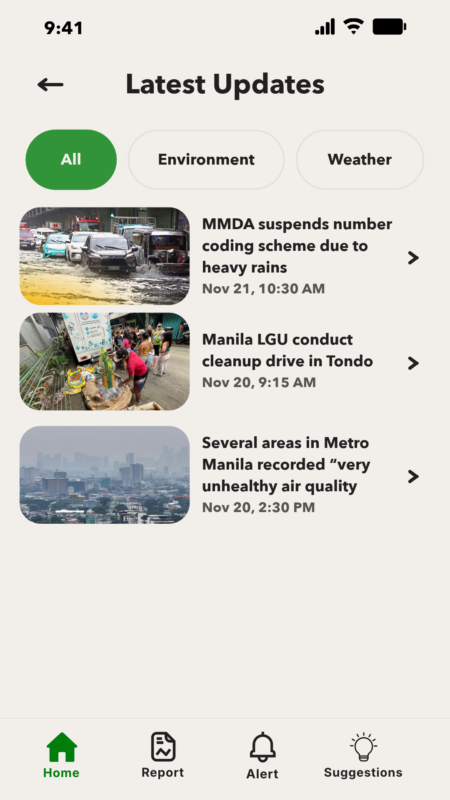
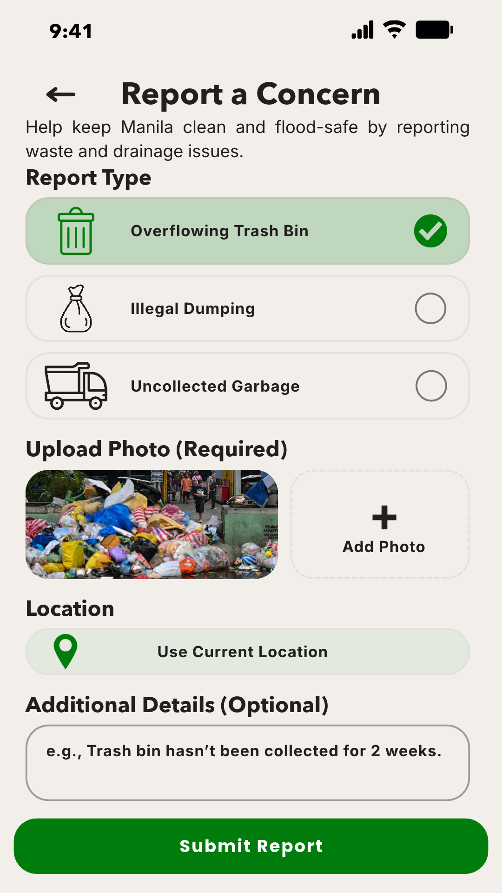
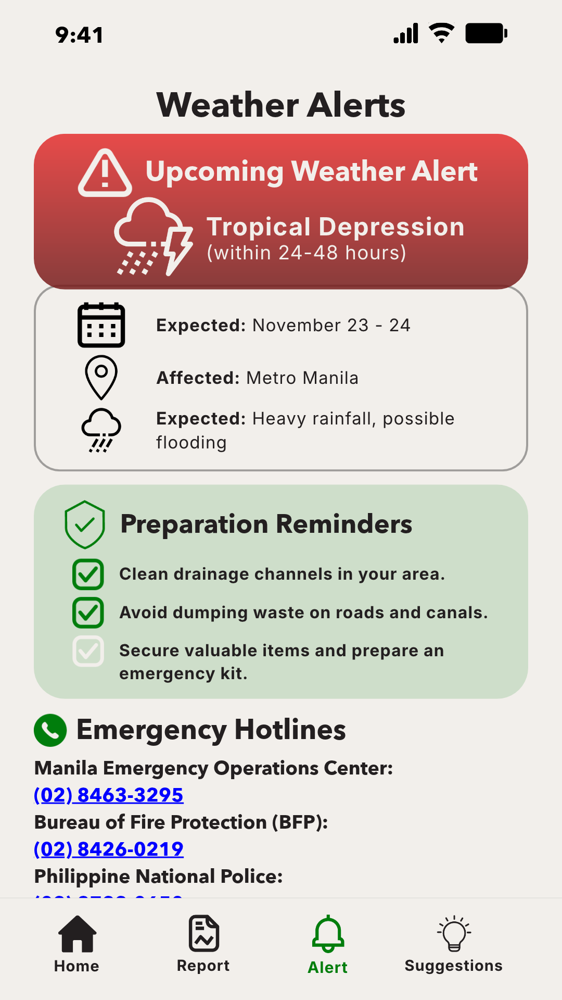
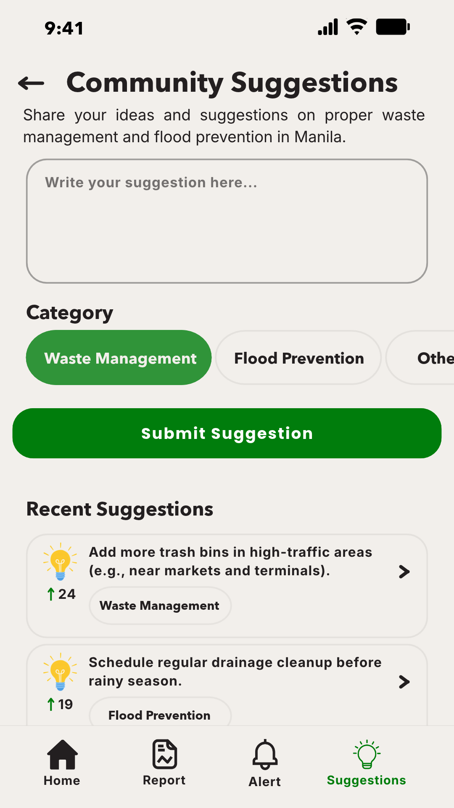

Get Weather Alerts & Latest Environmental Updates
Stay informed with real-time weather warnings (e.g., typhoons, heavy rainfall) and official environmental news in Manila, such as cleanup drives, waste management programs, and flood advisories.

Report Waste Issues
Easily report overflowing trash bins, illegal dumping, and uncollected garbage through an online form. Add a photo, location, and short details so the Manila LGU can respond quickly.

Alerts Tab
A dedicated tab for all urgent notifications, including weather warnings, flood advisories, drainage reminders, waste collection schedules, and a quick-reference emergency hotlines list.

Share Community Suggestions
A community suggestion box where Manila residents can share ideas, recommendations, and initiatives on proper waste management, recycling, and flood prevention in their area.